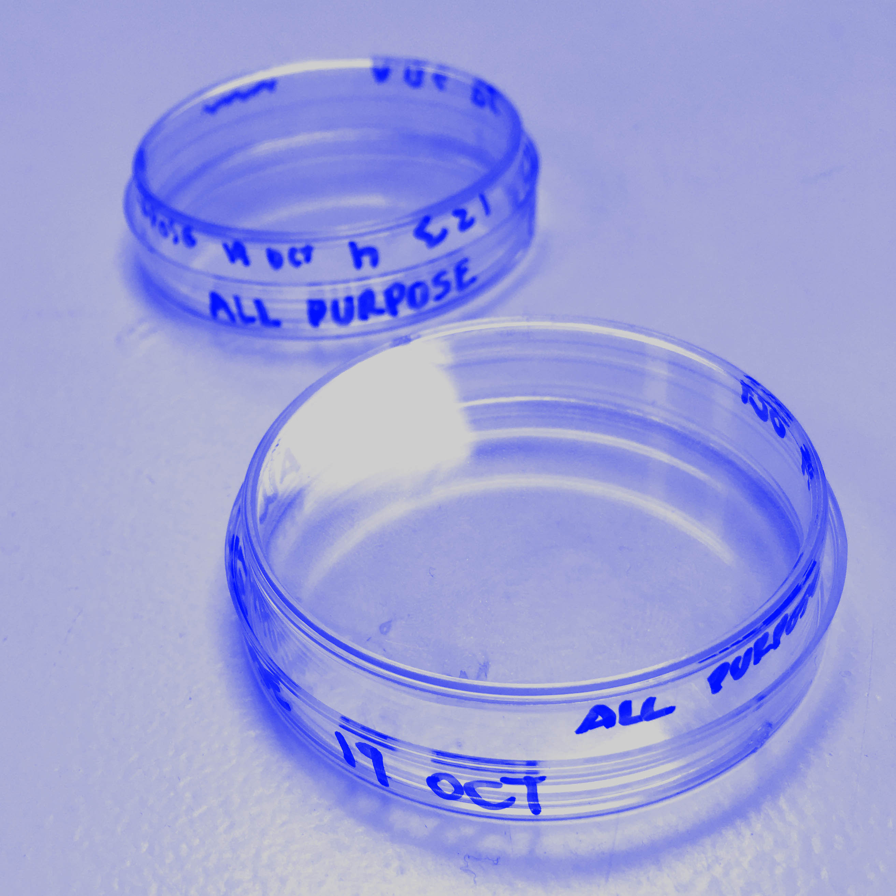
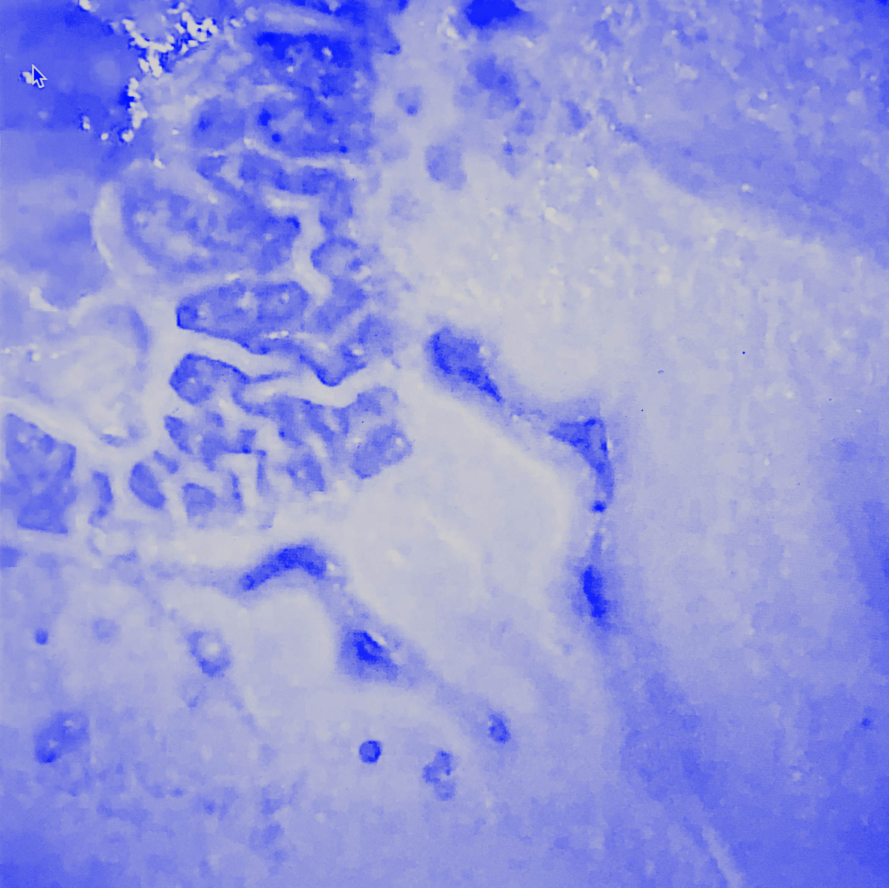
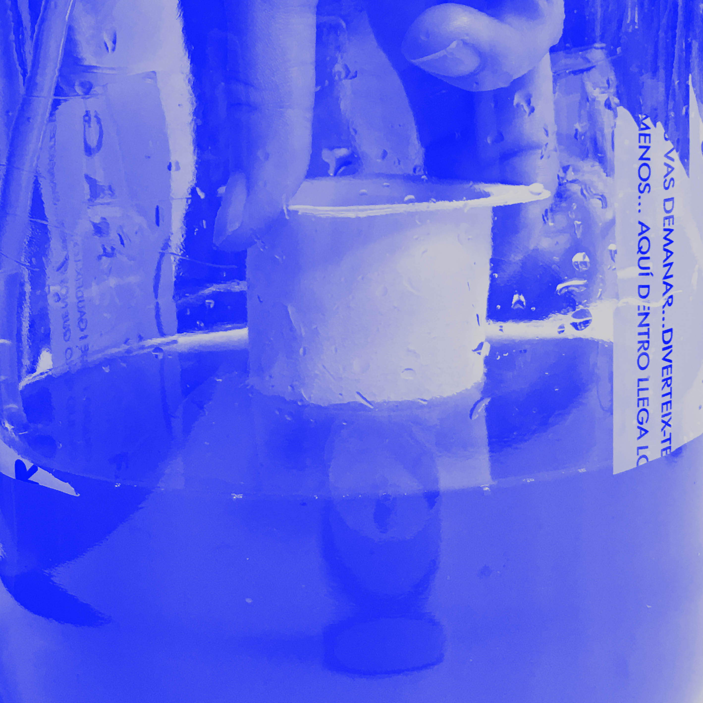
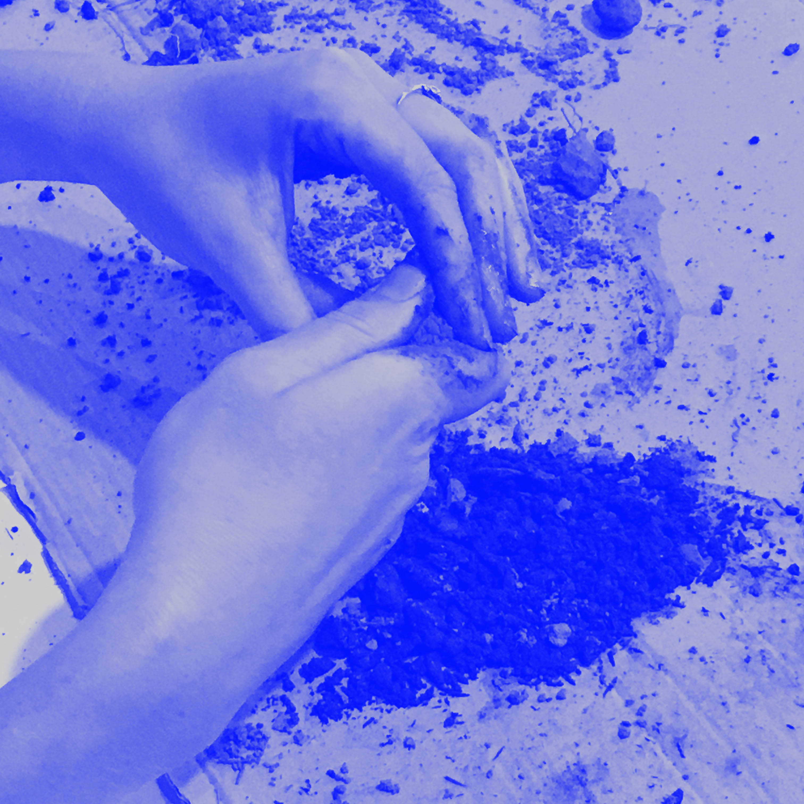

[1] petri dishes

[2] bacteria

[3] spirulina

[4] soil sample

[5] soil on microscope
Bio Zero and Agri Zero are 2 seminars that were given back to back in the timeframe of 2 weeks. These seminars are prepared and taught by Nuria Conde (a professional, double-PhD biologist and bio-hacker), and Jonathan Minchin (an environmental architect and farmer with knowledge in sustainability).
Before starting this course, I was very excited about it! Coming from a design background myself, biology and agriculture are two fields that I always found myself curious to explore but had a hard time being involved in.
We started this course with a presentation going through some general scientific concepts that are the pillars of this course. Nuria explained to us the interrelation between quantum mechanics, chemistry, biochemistry, molecular biology, microbiology, cellular biology, physiology, cultural evolution and finally synthetic biology. This was very beneficial as it helped me establish and relate all what I had learned in high school science classes in relation to each other, which is something they never bothered teaching us in high school.
We then proceeded, in groups, to prepare different mediums for the petri dishes[1], in which we would later add our collected specimen and track the growth of the bacteria[2] inside. The rest of this course was divided in a way where we would learn theory in the first half, have our lunch break and then practice and experiment with materials. I was personally excited to work with these laboratory materials for the first time, and I learned that some of the scientific procedures and lab experiments do not always require professional lab equipments and facilities and a lot of them can be done at home.
Nuria’s and Jonathan created a good balance in giving the course, as Nuria’s insight is very scientific and specific and Jonathan’s remarks would provide us more accessibility and understanding to these notions through examples and design-methods. We were later on introduced to Spirulina[3], kombucha, and learned how to provide them a healthy and growing environment. We also kept checking up on our petri dishes to identify some growing entities over the time we kept them in the incubator using traditional and non traditional microscopes. We also learned how to extract DNA samples and perform PCR tests using the equipment given to us.
The second week was more oriented towards agriculture. The program of the second week consisted of learning about bees and their behavior, identifying and labelling different qualities of soil[4] using several techniques: such as the soil texture flow chart, Munsell color chart identification, microscopic investigation[5] and others. We concluded the week by extracting the essential oil of Bay leaves.
Personally, I found this course interesting at points and excessive with detailed information at other points. I had a hard time relating to most of the content as I realized that I do not find interest in synthetic biology as a practice in which I would involve myself with often. I found it beneficial learning about how some things works and debunking some myths, but nothing further than that.
Before starting this course, I was very excited about it! Coming from a design background myself, biology and agriculture are two fields that I always found myself curious to explore but had a hard time being involved in.
We started this course with a presentation going through some general scientific concepts that are the pillars of this course. Nuria explained to us the interrelation between quantum mechanics, chemistry, biochemistry, molecular biology, microbiology, cellular biology, physiology, cultural evolution and finally synthetic biology. This was very beneficial as it helped me establish and relate all what I had learned in high school science classes in relation to each other, which is something they never bothered teaching us in high school.
We then proceeded, in groups, to prepare different mediums for the petri dishes[1], in which we would later add our collected specimen and track the growth of the bacteria[2] inside. The rest of this course was divided in a way where we would learn theory in the first half, have our lunch break and then practice and experiment with materials. I was personally excited to work with these laboratory materials for the first time, and I learned that some of the scientific procedures and lab experiments do not always require professional lab equipments and facilities and a lot of them can be done at home.
Nuria’s and Jonathan created a good balance in giving the course, as Nuria’s insight is very scientific and specific and Jonathan’s remarks would provide us more accessibility and understanding to these notions through examples and design-methods. We were later on introduced to Spirulina[3], kombucha, and learned how to provide them a healthy and growing environment. We also kept checking up on our petri dishes to identify some growing entities over the time we kept them in the incubator using traditional and non traditional microscopes. We also learned how to extract DNA samples and perform PCR tests using the equipment given to us.
The second week was more oriented towards agriculture. The program of the second week consisted of learning about bees and their behavior, identifying and labelling different qualities of soil[4] using several techniques: such as the soil texture flow chart, Munsell color chart identification, microscopic investigation[5] and others. We concluded the week by extracting the essential oil of Bay leaves.
Personally, I found this course interesting at points and excessive with detailed information at other points. I had a hard time relating to most of the content as I realized that I do not find interest in synthetic biology as a practice in which I would involve myself with often. I found it beneficial learning about how some things works and debunking some myths, but nothing further than that.